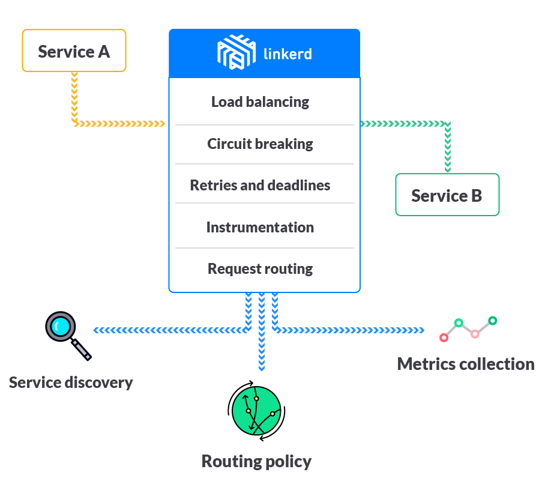

Linkerd
Linkerd 是一个面向云原生应用的 Service Mesh 组件，也是 CNCF 项目之一。它为服务间通信提供了一个统一的管理和控制平面，并且解耦了应用程序代码和通信机制，从而无需更改应用程序就可以可视化控制服务间的通信。linkerd 实例是无状态的，可以以每个应用一个实例 (sidecar) 或者每台 Node 一个实例的方式部署。

Linkerd 的主要特性包括
- 服务发现
- 动态请求路由
- HTTP 代理集成，支持 HTTP、TLS、gRPC、HTTP/2 等
- 感知时延的负载均衡，支持多种负载均衡算法，如 Power of Two Choices (P2C) Least Loaded、Power of Two Choices (P2C) peak ewma、Aperture: least loaded、Heap: least loaded、Round robin 等
- 熔断机制，自动移除不健康的后端实例，包括 fail fast（只要连接失败就移除实例）和 failure accrual（超过 5 个请求处理失败时才将其标记为失效，并保留一定的恢复时间 ）两种
- 分布式跟踪和度量

Linkerd 原理
Linkerd 路由将请求处理分解为多个步骤
- (1) IDENTIFICATION：为实际请求设置逻辑名字（即请求的目的服务），如默认将 HTTP 请求
GET http://example/hello赋值名字/svc/example - (2) BINDING：dtabs 负责将逻辑名与客户端名字绑定起来，客户端名字总是以
/#或/$开头，比如
# 假设 dtab 为
/env => /#/io.l5d.serversets/discovery
/svc => /env/prod
# 那么服务名 / svc/users 将会绑定为
/svc/users
/env/prod/users
/#/io.l5d.serversets/discovery/prod/users
- (3) RESOLUTION：namer 负责解析客户端名，并得到真实的服务地址（IP + 端口）
- (4) LOAD BALANCING：根据负载均衡算法选择如何发送请求

Linkerd 部署
Linkerd 以 DaemonSet 的方式部署在每个 Node 节点上：
# Deploy linkerd.
# For CNI, deploy linkerd-cni.yml instead.
# kubectl apply -f https://github.com/linkerd/linkerd-examples/raw/master/k8s-daemonset/k8s/linkerd-cni.yml
kubectl create ns linkerd
kubectl apply -f https://raw.githubusercontent.com/linkerd/linkerd-examples/master/k8s-daemonset/k8s/servicemesh.yml
$ kubectl -n linkerd get pod
NAME READY STATUS RESTARTS AGE
l5d-6v67t 2/2 Running 0 2m
l5d-rn6v4 2/2 Running 0 2m
$ kubectl -n linkerd get svc
NAME TYPE CLUSTER-IP EXTERNAL-IP POR AGE
l5d LoadBalancer 10.0.71.9 <pending> 4140:32728/TCP,4141:31804/TCP,4240:31418/TCP,4241:30611/TCP,4340:31768/TCP,4341:30845/TCP,80:31144/TCP,8080:31115/TCP 3m
默认情况下，Linkerd 的 Dashboard 监听在每个容器实例的 9990 端口（注意未在 l5d 服务中对外暴露），可以通过服务的相应端口来访问。
kubectl -n linkerd port-forward $(kubectl -n linkerd get pod -l app=l5d -o jsonpath='{.items[0].metadata.name}') 9990 &
echo "open http://localhost:9990 in browser"
Grafana 和 Prometheus
$ kubectl -n linkerd apply -f https://github.com/linkerd/linkerd-viz/raw/master/k8s/linkerd-viz.yml
$ kubectl -n linkerd get svc linkerd-viz
NAME TYPE CLUSTER-IP EXTERNAL-IP PORT(S) AGE
linkerd-viz LoadBalancer 10.0.235.21 <pending> 80:30895/TCP,9191:31145/TCP 24s
TLS
kubectl -n linkerd apply -f https://github.com/linkerd/linkerd-examples/raw/master/k8s-daemonset/k8s/certificates.yml
kubectl -n linkerd delete ds/l5d configmap/l5d-config
kubectl -n linkerd apply -f https://github.com/linkerd/linkerd-examples/raw/master/k8s-daemonset/k8s/linkerd-tls.yml
Zipkin
# Deploy zipkin.
kubectl -n linkerd apply -f https://github.com/linkerd/linkerd-examples/raw/master/k8s-daemonset/k8s/zipkin.yml
# Deploy linkerd for zipkin.
kubectl -n linkerd apply -f https://github.com/linkerd/linkerd-examples/raw/master/k8s-daemonset/k8s/linkerd-zipkin.yml
# Get zipkin endpoint.
ZIPKIN_LB=$(kubectl get svc zipkin -o jsonpath="{.status.loadBalancer.ingress[0].*}")
echo "open http://$ZIPKIN_LB in browser"
NAMERD
$ kubectl apply -f https://raw.githubusercontent.com/linkerd/linkerd-examples/master/k8s-daemonset/k8s/namerd.yml
$ kubectl apply -f https://raw.githubusercontent.com/linkerd/linkerd-examples/master/k8s-daemonset/k8s/linkerd-namerd.yml
$ go get -u github.com/linkerd/namerctl
$ go install github.com/linkerd/namerctl
$ NAMERD_INGRESS_LB=$(kubectl get svc namerd -o jsonpath="{.status.loadBalancer.ingress[0].*}")
$ export NAMERCTL_BASE_URL=http://$NAMERD_INGRESS_LB:4180
$ $ namerctl dtab get internal
# version MjgzNjk5NzI=
/srv => /#/io.l5d.k8s/default/http ;
/host => /srv ;
/tmp => /srv ;
/svc => /host ;
/host/world => /srv/world-v1 ;
Ingress Controller
Linkerd 也可以作为 Kubernetes Ingress Controller 使用，注意下面的步骤将 Linkerd 部署到了 l5d-system namespace。
$ kubectl create ns l5d-system
$ kubectl apply -f https://raw.githubusercontent.com/linkerd/linkerd-examples/master/k8s-daemonset/k8s/linkerd-ingress-controller.yml -n l5d-system
# If load balancer is supported in kubernetes cluster
$ L5D_SVC_IP=$(kubectl get svc l5d -n l5d-system -o jsonpath="{.status.loadBalancer.ingress[0].*}")
$ echo open http://$L5D_SVC_IP:9990
# Or else
$ HOST_IP=$(kubectl get po -l app=l5d -n l5d-system -o jsonpath="{.items[0].status.hostIP}")
$ L5D_SVC_IP=$HOST_IP:$(kubectl get svc l5d -n l5d-system -o 'jsonpath={.spec.ports[0].nodePort}')
$ echo open http://$HOST_IP:$(kubectl get svc l5d -n l5d-system -o 'jsonpath={.spec.ports[1].nodePort}')
然后通过 kubernetes.io/ingress.class: "linkerd" annotation 使用 linkerd ingress 控制器：
apiVersion: extensions/v1beta1
kind: Ingress
metadata:
name: hello-world
annotations:
kubernetes.io/ingress.class: "linkerd"
spec:
backend:
serviceName: world-v1
servicePort: http
rules:
- host: world.v2
http:
paths:
- backend:
serviceName: world-v2
servicePort: http
更多使用方法见这里。
应用示例
可以通过 HTTP 代理和 linkerd-inject 等两种方式来使用 Linkerd。
HTTP 代理
应用程序在使用 Linkerd 时需要为应用设置 HTTP 代理，其中
- HTTP 使用
$(NODE_NAME):4140 - HTTP/2 使用
$(NODE_NAME):4240 - gRPC 使用
$(NODE_NAME):4340
在 Kubernetes 中，可以使用 Downward API 来获取 NODE_NAME，比如
---
apiVersion: v1
kind: ReplicationController
metadata:
name: hello
spec:
replicas: 3
selector:
app: hello
template:
metadata:
labels:
app: hello
spec:
dnsPolicy: ClusterFirst
containers:
- name: service
image: buoyantio/helloworld:0.1.6
env:
- name: NODE_NAME
valueFrom:
fieldRef:
fieldPath: spec.nodeName
- name: POD_IP
valueFrom:
fieldRef:
fieldPath: status.podIP
- name: http_proxy
value: $(NODE_NAME):4140
args:
- "-addr=:7777"
- "-text=Hello"
- "-target=world"
ports:
- name: service
containerPort: 7777
---
apiVersion: v1
kind: Service
metadata:
name: hello
spec:
selector:
app: hello
clusterIP: None
ports:
- name: http
port: 7777
---
apiVersion: v1
kind: ReplicationController
metadata:
name: world-v1
spec:
replicas: 3
selector:
app: world-v1
template:
metadata:
labels:
app: world-v1
spec:
dnsPolicy: ClusterFirst
containers:
- name: service
image: buoyantio/helloworld:0.1.6
env:
- name: POD_IP
valueFrom:
fieldRef:
fieldPath: status.podIP
- name: TARGET_WORLD
value: world
args:
- "-addr=:7778"
ports:
- name: service
containerPort: 7778
---
apiVersion: v1
kind: Service
metadata:
name: world-v1
spec:
selector:
app: world-v1
clusterIP: None
ports:
- name: http
port: 7778
linkerd-inject
# install linkerd-inject
$ go get github.com/linkerd/linkerd-inject
# inject init container and deploy this config
$ kubectl apply -f <(linkerd-inject -f <your k8s config>.yml -linkerdPort 4140)